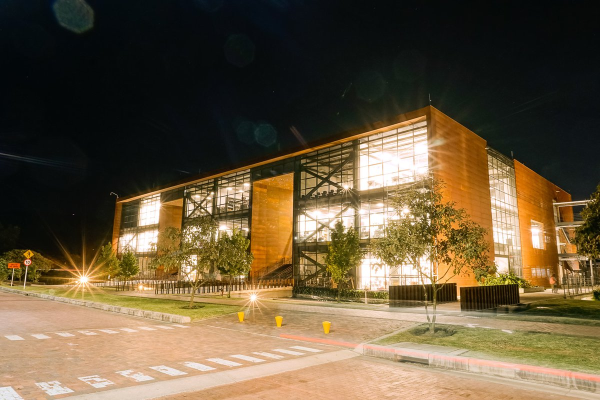

Laboratorio
Un espacio que fomenta la creatividad y la innovación.

Equipos y Materiales
Son 28 computadores (Intel Core i7).
Organización física
Los Laboratorios del programa de Ingeniería de Sistemas de la Escuela Colombiana de Ingeniería Julio Garavito son ocho.